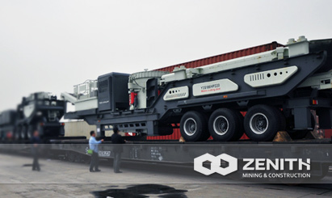
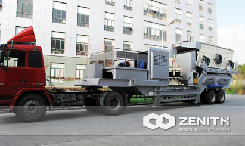
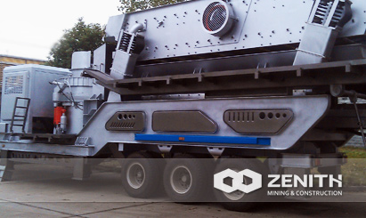
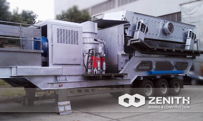

- 
- 
- 
- 
Mobile Cone Crusher
Mobile cone crusher, is a popular mobile crushing plant for people in mining and construction industry who want to get end products with cubical shape and high quality. is not limited by the working site, and reduces high transportation cost. It can crush materials on site or nearby. It is very suitable for dealing with open-pit mines. In spite of complicate conditions in the quarry, mobile cone crushers can overcome those limitations, and give play to advantages in the mining industry.
Widely Application of mobile cone Crusher
Mobile cone crusher is mainly used as secondary crusher for fineness crushing. The series mobile cone crusher can be widely used for crushing and screening in many areas such as road construction, building, metallurgical, recycling and energy industries, etc.It offers high efficient and low cost project plan without environment limit for the client.
mobile Cone Crusher Benefits and advantages
- Equipped with efficient cone crusher, it has excellent crushing performance.
- Optimized crushing cavity can significantly increase crushing ratio and output.
- It features great production capacity, high reliability, easy maintenance, which greatly reduced the production costs.
- Easy to adapt and flexible to collocate with other machine
The tacnology data
| Model | Car Body | Vibrating Screen | Crusher | Belt Conveyor (standard configuration) | Engine (Optional) | Overall dimension (mm) | |||
|---|---|---|---|---|---|---|---|---|---|
| Model | Feeding Size (mm) | Power (kw) | Model | Feeding Size (mm) | Size(m) | Power (kw) | |||
| Y3S1848CS75 | Two-Spindle | 3YK1848 | ≤400 | 4-18.5 | 36(3′) | 6-75 | B800×7.5 | 200 | 13050×2830×4350 |
| Y3S1860CS160 | Three-Spindle | 3YK1860 | ≤400 | 4-22 | 51(4.25′) | 6-160/185 | B800×8.5 | 500 | 14300×2830×4380 |
| Y3S1860HP220 | Three-Spindle | 3YK1860 | ≤400 | 4-22 | HPC220 | 4-220 | B800×8.5 | 550 | 14300×2830×4380 |
| Y3S2160HP220 | Three-Spindle | 3YK2160 | ≤400 | 4-30 | HPC220 | 4-220 | B1000×8.5 | 550 | 14300×3150×4380 |